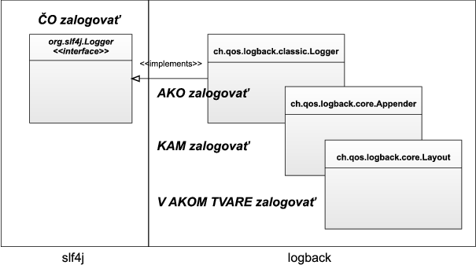
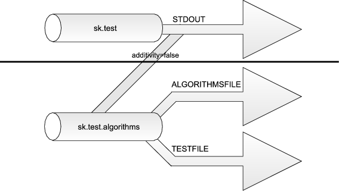

Úvod
Logovanie je neodbytnou súčasťou každej aplikácie, hoci si to autori ani
neuvedomujú. Je takmer nevyhnutné priebežne sledovať stav behu
aplikácie, či evidovať chybové hlásenia. Ladiace (logovacie) výpisy sú
spôsob, ktorým je možné to dosiahnuť. Za takýto výpis možno považovať už
každý výpis smerujúci na konzolu (teda využívajúci System.out alebo
System.err). V prípade zložitých systémov však System.out veľmi
rýchlo prestane vyhovovať.
Note
Logovanie (logging) má svoj pôvod v moreplavbe, presnejšie v spôsobe určovania rýchlosti lode. Využívalo sa pri tom lano, na ktorom boli zaviazané uzly v pevne danej vzdialenosti (cca 14 metrov), a kolík (log) umiestnený na konci. Námorník vyhodil log z kormy lode, postupne odvíjal lano, a rátal uzly, ktoré mu pri odvíjaní prešli pomedzi ruky počas doby tridsiatich sekúnd. (Túto dobu odmeriaval ďalší námorník presýpacími hodinami.) Dokázal tak získať vzdialenosť prejdenú za čas, z ktorej vedel vyrátať rýchlosť. Získané údaje sa zapisovali do *log book*u, doslova „knihy kolíka“, z ktorej sa neskôr vyvinul kapitánov denník, teda log. Podľa tejto techniky merania tiež získala svoj názov námorná jednotka rýchlosti uzol.
Logovacie knižnice predstavujú spôsob, ktorým je možné získať väčšiu
kontrolu nad výpismi – umožňujú ich filtrovať, zapínať či vypínať podľa
dôležitosti a presmerovávať do rôznych výstupov a to všetko možno
nastavovať individuálne pre každú triedu či balíček. V Jave, ako to už
býva, neexistuje jediný pravý spôsob pre logovanie. Napriek tomu, že v
JDK máme dostupný balíček java.util.logging, de facto štandardom sa stal
log4j.
Note
Log4j má pôvod v IBM a existoval už dávno predtým, než nastali úvahy o zaradení logovacieho balíčka do jadra Javy. Dizajnéri zo Sunu z rôznych dôvodov odignorovali log4j a logovaciu knižnicu navrhli nanovo. Ich úsilie však do istej miery vyšlo nazmar – java.util.logging vyžadovalo JDK 1.4 (naproti log4j, ktoré si ešte i teraz vystačí s JDK 1.3) a poskytovalo oveľa menej funkcionality. Situáciu vystihuje tvrdenie z diskusných fór TheServerSide.com: “Balíček java.util.logging je len indigovou kópiou log4j. A všetci vieme, že takéto kópie sú vždy nekvalitnejšie ako originál.”
Samozrejme, mnoho autorov projektov sa nevedelo rozhodnúť medzi java.util.logging a log4j. Dilemu sčasti vyriešilo zavedenie abstraktnej knižnice commons-logging z dielne Apache, ktorá predstavovala tenkú medzivrstvu v podobe interfejsov, ktorá umožňovala dynamicky zvoliť použitú logovaciu knižnicu. Táto „metalogovacia“ knižnica však v sebe niesla množstvo fatálnych problémov súvisiacich s classloadingom (čiže vedúcich k nanajvýš obskúrnym problémom).
Ceki Gülcü, duchovný otec log4j, navrhol vlastný variant commons-logging, ktorý odstraňuje tajomné chyby, prináša možnosť voľby konkrétnej implementácie a navyše umožňuje zmigrovať i tie aplikácie, ktoré sú napevno spojené s jednou konkrétnou implementáciou. Táto knižnica sa nazýva slf4j a budeme sa jej venovať i v tomto článku.
Akú to má výhodu? V rámci aplikácie môžete v prípade dynamicky zameniť použitú implementáciu logovania, a nemusíte zmeniť ani riadok kódu. Ak by vaša aplikácia napevno používala log4j, a nasadí sa do servera založeného na java.util.logging, prídete napr. o možnosť centralizovane spracovávať všetky logy.
Do roly konkrétnej implementácie logovania sme v článku zvolili logback, ktorý predstavuje „ďalšiu generáciu“ starého známeho log4j, ktorého vývoj sa považuje za ukončený (hlavne preto, že podpora nových vlastností a oprava niektorých chýb by vyžadovala kompletný prepis). Dôležité je, že oba projekty majú rovnakého duchovného otca i rovnaké princípy. Ak vám je i napriek tomu ľúto za log4j, vzhľadom na abstraktnosť slf4j je výmena log4j za logback len otázkou výmeny JAR súborov v projekte.
Stiahnutie a inštalácia slf4j a logback
Zo stránok projektu slf4j si
stiahneme archív a do projektu pridáme slf4j-api-1.5.8.jar. Zo
stránok projektu logback si
stiahneme archív a do projektu pridáme dva JARy:
logback-core-0.9.17.jar a logback-classic-0.9.17.jar.
JAR pre slf4j reprezentuje interfejsy, ktoré pristupujú ku konkrétnej implementácii reprezentovanej zvyšnými dvoma JARmi.
Použitie slf4j
Logovanie si môžeme ukázať na príklade neužitočného, ale didaktického príkladu:
package sk.test.arrays;
public class Arrays {
public void countElements(int... elements) {
System.out.println("Spočítavam " + elements.length + " prvkov.");
int sum = 0;
for(int i = 0; i < elements.length; i++) {
sum = sum + elements[i];
System.out.println("Spracovávam " + i + ". prvok: " + elements[i]);
}
System.out.println("Výsledok: " + sum);
}
public static void main(String[] args) {
Arrays a = new Arrays();
a.countElements(2, 3, 5, 2);
}
}
Po spustení dostaneme šesť hlášok – štyri vo vnútri cyklu, jednu na
úvod a jednu na záver. Problém je, že bežného používateľa asi nechceme
zaťažovať všetkými možnými ladiacimi informáciami. V tomto príklade by
bol možno spokojný, keby dostal maximálne jednu úvodnú hlášku, a možno
dokonca by ho nebolo treba otravovať žiadnymi „zbytočnosťami“.
System.out nám však nedáva veľa možností na zmenu správania –
prinajlepšom je možné úplne potlačiť výstup, alebo ho presmerovať cez
System.setOut(), ale toto riešenie ovplyvní celú aplikáciu.
Príklad by sme však mohli prerobiť pre použitie slf4j.
package sk.test.arrays;
import org.slf4j.Logger;
import org.slf4j.LoggerFactory;
public class Arrays {
private static final Logger logger = LoggerFactory.getLogger(Arrays.class);
public void countElements(int... elements) {
logger.info("Spočítavam " + elements.length + " prvkov.");
int sum = 0;
for(int i = 0; i < elements.length; i++) {
sum = sum + elements[i];
logger.info("Spracovávam " + i + ". prvok: " + elements[i]);
}
logger.info("Výsledok: " + sum);
}
public static void main(String[] args) {
Arrays a = new Arrays();
a.countElements(2, 3, 5, 2);
}
}
Po spustení triedy získame výstup:
18:41:25.021 [main] INFO sk.test.Arrays - Spočítavam 4 prvkov.
18:41:25.030 [main] INFO sk.test.Arrays - Spracovávam 0. prvok: 2
18:41:25.030 [main] INFO sk.test.Arrays - Spracovávam 1. prvok: 3
18:41:25.030 [main] INFO sk.test.Arrays - Spracovávam 2. prvok: 5
18:41:25.031 [main] INFO sk.test.Arrays - Spracovávam 3. prvok: 2
18:41:25.031 [main] INFO sk.test.Arrays - Výsledok: 12
Vypísalo sa teda všetkých šesť hlášok. Rozdiel oproti klasickému
System.out spočíva vo formáte správ – logback dodal ku každej
chybovej hláške časovú pečiatku a ďalšie pomocné identifikačné
záležitosti súvisiace so správou. Na rozdiel od System.out používame
na logovanie inštanciu triedy org.slf4j.Logger, ktorú môžeme získať z
továrne na loggery org.slf4j.LoggerFactory.
private static final Logger logger = LoggerFactory.getLogger(Arrays.class);
Logger si môžeme predstaviť ako kanál, do ktorého posielame ladiace hlášky. V typickom prostredí má každá inštancia triedy vlastnú inštanciu loggera – hoci nie je výnimočné, keď všetky inštancie konkrétnej triedy využívajú jedinú, spoločnú, inštanciu loggera. (To môžeme docieliť použitím modifikátora static).
Bez ohľadu na zvolený spôsob platí, že každá inštancia loggera má svoj
vlastný reťazcový identifikátor – v uvedenom príklade sme logger
pomenovali podľa názvu triedy, v ktorej sa nachádza – máme teda logger
sk.test.Arrays. Vypisovať ladiacu hlášku možno volaním metód, ktorých
mená závisia od priority (viď ďalšia sekcia); štandardným spôsobom je
výpis informačnej hlášky (s prioritou, resp. levelom INFO), teda
zavolaním metódy logger.info().
Konfigurácia slf4j a logbacku
Level (priorita) ladiacej hlášky
Najčastejšie využívanou charakteristikou ladiacej hlášky je level (priorita), ktorá určuje jej význačnosť a dôležitosť. slf4j podporuje päť levelov, v tabuľke ich uvádzame podľa dôležitosti.
| Level hlášky | Typický účel |
|---|---|
| TRACE | trasovacie hlášky, typicky pre jednotlivé kroky algoritmov |
| DEBUG | ladiace hlášky, ktoré sú pri ostrom behu vypnuté |
| INFO | informačné hlášky, ktoré informujú bežného používateľa |
| WARN | upozornenia a varovania pre chyby, z ktorých sa možno zotaviť |
| ERROR | závažné chyby, ktoré bránia behu programu |
V príklade sme logovali hlášky na úrovniach INFO. Otázkou je, či bežného používateľa zaujímajú podrobné ladiace výpisy spracovávania jednotlivých prvkov poľa. Podľa nás nie – výpis by sa mal vykonávať len v prípade testovacieho/ladiaceho behu. Prerobme teda program nasledovne:
public void countElements(kint... elements) {
logger.debug("Spočítavam " + elements.length + " prvkov.");
int sum = 0;
for(int i = 0; i < elements.length; i++) {
sum = sum + elements[i];
logger.trace("Spracovávam " + i + ". prvok: " + elements[i]);
}
logger.trace("Výsledok: " + sum);
}
Spracovávanie prvkov a výpis výsledku budeme považovať za
nízkoprioritné, a výpis spracovávania prvkov budeme považovať za
DEBUG-ovaciu hlášku. Použijeme teda metódy logger.debug() a
logger.trace().
Po spustení programu získame jedinú hlášku:
10:09:10.701 [main] DEBUG sk.test.Arrays - Spočítavam 4 prvkov.
Kam sa stratili hlášky na úrovni TRACE? Boli odfiltrované, pretože v
štandardnej konfigurácii vypisuje logback len logovacie hlášky na úrovni
DEBUG alebo vyššie. Hneď to však napravíme.
Zmena levelu vypisovaných hlášok
Až samotná implementácia logovania (u nás logback) určí, či sa hláška
nakoniec objaví vo výpise, alebo bude potlačená. Ak chceme vypisovať
hlášky na úrovni TRACE, už si nevystačíme s implicitnou konfiguráciou
logbacku. Musíme uviesť vlastnú konfiguráciu, čo dosiahneme vytvorením
súboru logback.xml a jeho umiestnením do CLASSPATH.
<?xml version="1.0" encoding="UTF-8" ?>
<configuration>
<appender name="STDOUT" class="ch.qos.logback.core.ConsoleAppender">
<layout class="ch.qos.logback.core.layout.EchoLayout" />
</appender>
<logger name="sk.test.Arrays" level="TRACE">
<appender-ref ref="STDOUT" />
</logger>
</configuration>
Po spustení aplikácie uvidíme všetkých šesť hlások, v tomto prípade však
bez akýchkoľvek časových značek. Dôvody si ihneď vysvetlíme po
objasnení architektúry logbacku. Zatiaľ povieme len to, že level hlášok
pre logger s identifikátorom „sk.test.Arrays“ bol nastavený v elemente
<logger> na TRACE. Ak by sme chceli nakonfigurovať loggery pre
ďalšie triedy, pre každý z nich zavedieme samostatný element
<logger> uvedieme atribút name rovný názvu triedy a v atribúte
level nastavíme požadovanú prioritu hlášky, ktorá sa má ešte spracovať.
Nezabudnime, že levely sú usporiadané podľa priority, teda logger, ktorý
má nastavený level na INFO, prepúšťa hlášky INFO, WARN a ERROR.
Formátovanie hlášok
V prípade System.out sme pri výpise používali spájanie reťazcov, ale
to nie je veľmi efektívny spôsob. Samotné logovanie by totiž malo byť čo
najrýchlejšie a nemalo by zdržiavať beh programu. Ďalšou možnosťou
zrýchlenia logovania je vloženie podmienky, ktorá zistí, či má daný
logger spracovávať hlášku daného levelu – ak nie, volanie logovacej
metódy sa preskočí a ušetrí zbytočné spracovávanie.
if(logger.isTraceEnabled()) {
logger.trace("Počítam dáta...");
}Dva dodatočné riadky však môžu opticky prekážať v kóde. Našťastie existuje spôsob, ktorý zabije dve muchy jednou ranou:
logger.trace("Spracovávam " + i + ". prvok: " + elements[i]);
logger.trace("Spracovávam {}. prvok {}", new Object[] {i, elements[i]});Uvedené dva riadky vypíšu to isté – druhý riadok však automaticky
skontroluje, či logger podporuje TRACE level, a ak nie, rovno preskočí
typovú konverziu a spájanie reťazcov. Podľa autorov je v prípade
vypnutého TRACE levelu druhý riadok až tridsaťnásobne rýchlejší.
Parametrizované logovanie teda ušetrí prácu so spájaním reťazcov a navyše odbremeňuje od nutnosti testovať, či logovanie má zmysel vykonať.
V prípade jednoparametrových hlášok stačí rovno používať príslušné dvojparametrové metody:
logger.debug("Spočítavam {} prvkov.", elements.length);
Architektúra
Architektúra logbacku pomôže objasniť, čo všetko sa udeje s ladiacou hláškou od chvíle, keď ju odošleme do inštancie loggera až do momentu, keď sa zjaví na konzole (v súbore, databáze, či inom cieľovom úložisku).

org.slf4j.Logger: je trieda, ktorú sme už používali. Predstavuje inštanciu loggera a jej hlavnou úlohou je poskytovať spôsob na zalogovanie hlášky s danou prioritou. Zopakujme, že každý logger má svoj jedinečný identifikátor, ktorý sa typicky odvodí z názvu triedy, ktorá daný logger používa. Logger je nástroj, ktorému vie inštancia povedať „zaloguj TOTO“.ch.qos.logback.classic.Loggerpredstavuje konkrétnu implementáciu loggera, v tomto prípade z projektu logback. Vie, čo presne s logovacou hláškou spraviť, a v závislosti od jej levelu ju môže zverejniť alebo ignorovať. Cieľ, kam sa hláška zapíše fyzicky, je záležitosťou použitých appenderov.- Appender: predstavuje objekt, ktorý fyzicky zapisuje hlášky do nejakého výstupného kanála (inak povedané, určuje kam sa má hláška
zapísať). V logbacku sú k dispozícii hotové appendéry pre zápis do
konzoly (
ConsoleAppender), súboru (FileAppender), databázy (DBAppender) a do mnohých ďalších kanálov. Appendér však nerieši formát hlášky – spoľahne sa pri tom na layout. - Layout: odpovedá za formát hlášky (teda ako má hláška vyzerať). Primitívny layout len vezme ladiacu hlášku a vráti ju bez akéhokoľvek formátovania. Zložitejší layout môže prilepovať časové pečiatky, level, názov triedy, ktorá hlášku zalogovala a pod. Tie najkomplexnejšie layouty vedia formátovať hlášky do XML či HTML.
Architektúra na príklade
Vráťme sa k predošlému uvedému príkladu XML súboru. V ňom konfigurujeme
logback, teda nastavujeme triedy, ktoré sú uvedené v „pravej“ časti
obrázka. (Projekt slf4j nemá žiadnu konfiguráciu.) V elemente
<appender> sme nakonfigurovali konzolový appender (teda hlášky
pôjdu do System.out)) a dali sme mu názov „STDOUT“.
<appender name="STDOUT" class="ch.qos.logback.core.ConsoleAppender">
<layout class="ch.qos.logback.core.layout.EchoLayout" />
</appender>Tento appender bude využívať layout EchoLayout, ktorý funguje naozaj
primitívne: pred ladiacu hlášku vloží reťazec s jej prioritou.
V elemente <logger> nakonfigurujeme logger a pridelíme mu minimálny
level hlášky, ktorý sa má posielať do appenderov uvedených v
<appender-ref>. Všimnime si, že jeden logger môže posielať hlášky
do viacerých appenderov: na jeden „šup“ teda vieme zapísať hlášku napr.
na konzolu i do súboru – stačí uviesť viacero elementov
<appender-ref>.
Hierarchia loggerov
Veľmi často sa stáva, že chceme meniť vlastnosti loggerov pre celé
moduly, balíčky alebo skupiny tried. Ak by sme napríklad chceli zmeniť
level loggerov v balíčku sk.test.Arrays na TRACE, museli by sme upraviť
atribút level vo všetkých elementoch <logger>. To však našťastie
nie je potrebné, pretože vieme s výhodou využiť hierarchiu loggerov.
Všetky inštancie loggerov sú usporiadané v hierarchii predkov a
potomkov. Logger X je predkom iného loggeru Y, ak má identifikátor,
ktorý po ukončení bodkou tvorí prefix identifikátora loggera Y.
Napríklad logger s identifikátorom sk.test je predkom loggera
sk.test.Arrays, ale zase potomkom identifikátora sk. Všetky
loggery majú jedného spoločného predka, tzv. koreňový logger, ktorý
môžeme získať cez
Logger rootLogger = LoggerFactory.getLogger(org.slf4j.Logger.ROOT_LOGGER_NAME);Hierarchia sa najčastejšie využíva pre dedenie levelu loggerov. Ak máme
logger a chceme zistiť jeho level, postupujeme smerom nahor v hierarchii
a hľadáme prvú nenullovú špecifikáciu levelu. V našom príklade je
situácia jednoduchá: level loggeru sk.test.Arrays je zjavne TRACE,
lebo to sme explicitne uviedli v jeho konfigurácii.
Zoberme si ďalší situáciu. Zadefinujme si v XML súbore jedinú špecifikáciu loggera:
<logger name="sk.test" level="INFO">
<appender-ref ref="STDOUT" />
</logger>Ak by sme mali triedu, ktorá loguje do loggera s
menomsk.test.algorithms.ComplexAlgorithm, tak jeho level bude INFO.
Postupne sa totiž prechádza cez hierarchiu smerom nahor a hľadá sa prvá
explicitná špecifikácia loggera. Logger sk.test.algorithms nemá žiadnu
špecifikáciu, ale jeho „starý otec“ sk.test už áno – čiže efektívny
level sa prevezme práve odtiaľto. Inými slovami, platí zásada podobná
objektovo-orientovanému programovaniu – levely sa dedia od rodičov a
potomkovia ich môžu prekryť.
Nastavenie koreňového loggera
Koreňový logger je predkom každého loggera, má pevne určený (a nemenný)
identifikátor a preddefinovaný level DEBUG. Na rozdiel od bežných
loggerov, ktoré sa v XML súbore konfigurujú pomocou elementu
<logger>, koreňovému elementu zodpovedá element <root>, v
ktorom môžeme nastaviť appendery a prípadne zmeniť jeho implicitný
level. Zmenou levelu koreňového loggera vieme hromadne nastaviť level
všetkých potomkov (okrem tých, ktorý ho prekryjú).
<?xml version="1.0" encoding="UTF-8" ?>
<configuration>
<appender name="STDOUT" class="ch.qos.logback.core.ConsoleAppender">
<layout class="ch.qos.logback.core.layout.EchoLayout" />
</appender>
<root level="INFO">
<appender-ref ref="STDOUT" />
</root>
</configuration>V tomto prípade sme nastavili koreňovému loggeru level INFO, ktorý sa
automaticky „prepadne“ nadol do všetkých potomkov. Inak povedané, všetky
potomkovské loggery budú mať level INFO, pokiaľ si ho nepredefinujú
sami. Iný príklad dedičnosti je v nasledovnej tabuľke:
| Identifikátor loggera | Explicitný level | Efektívny level |
|---|---|---|
| koreň | - | DEBUG (automaticky priradený) |
| sk.novotnyr | - | DEBUG (zdedený) |
| sk.novotnyr.davano | INFO | INFO |
| sk.novotnyr.davano.dao | DEBUG | DEBUG |
Dedičnosť appenderov
V predošlej stati sme videli, že loggery dedia a prekrývajú levely. Týka
sa dedičnosť aj appenderov? Istým spôsobom áno. V príklade z predošlej
state máme koreňový logger, ktorý používa appender s
názvom STDOUT. Dodajme konfiguráciu ďalšieho loggera:
<?xml version="1.0" encoding="UTF-8" ?>
<configuration>
<appender name="STDOUT" class="ch.qos.logback.core.ConsoleAppender">
<layout class="ch.qos.logback.core.layout.EchoLayout" />
</appender>
<root level="INFO">
<appender-ref ref="STDOUT" />
</root>
<logger name="sk.test.Arrays" />
</configuration>Logger sk.test.Arrays zdedí nielen level (teda získa efektívny level
INFO), ale aj appender STDOUT. Dodajme do príkladu druhý appender, ktorý
bude posielať na konzolu správy v tvare XML a asociujme ho s loggerom
sk.test.Arrays.
<appender name="STDOUTXML" class="ch.qos.logback.core.ConsoleAppender">
<layout class="ch.qos.logback.classic.log4j.XMLLayout" />
</appender>
...
<logger name="sk.test.Arrays">
<appender-ref ref="STDOUTXML" />
</logger>Po spustení Java triedy sa každá správa vypíše dvakrát: raz v bežnom jednoduchom formáte a raz v tvare XML:
<log4j:event logger="sk.test.Arrays"
timestamp="1257172284059" level="DEBUG" thread="main">
<log4j:message><![CDATA[Spočítavam 4 prvkov.]]></log4j:message>
</log4j:event>
[DEBUG] Spočítavam 4 prvkov.
<log4j:event logger="sk.test.Arrays"
timestamp="1257172284066" level="TRACE" thread="main">
<log4j:message><![CDATA[Spracovávam 0. prvok: 2]]></log4j:message>
</log4j:event>
[TRACE] Spracovávam 0. prvok: 2
...
Tento príklad demonštruje, že loggery zdedia appendery od rodičovských loggerov, a dodajú k nim každý appender, s ktorým sa asociujú explicitne. Inak povedané, logger pošle hlášku nielen do appenderov, ktoré pri ňom boli definované, ale aj do appenderov definovaných v rodičovských loggeroch. Táto vlastnosť sa nazýva aditivita appenderov.
Aditivita appenderov
Šírenie správ do rodičovských appenderov možno zaraziť vypnutím
aditivity na konkrétnom loggeri. Predstavme si situáciu, kde máme logger
sk.test.algorithms s explicitne uvedenými appendérmi, ktoré zapisujú
jednak do konzoly a jednak do súboru algorithms.txt. Zároveň majme
logger sk.test, ktorý zapisuje hlášky do centrálneho aplikačného log
súboru test.log. Aditivita zabezpečí, že logovacie hlášky z loggera
sk.test.algorithms sa zjavia v oboch súboroch i na konzole.
<appender name="ALGORITHMSFILE" ...
<appender name="TESTFILE" ...
<appender name="STDOUT" ...
<logger name="sk.test">
<appender-ref ref="TESTFILE" />
</logger>
<logger name="sk.test.algorithms">
<appender-ref ref="ALGORITHMSFILE" />
<appender-ref ref="STDOUT" />
</logger>Čo ak chceme zabrániť tomu, aby „ladiace hlásenia modulu“ putovali do
centrálneho aplikačného log súboru? Stačí vypnúť aditivitu na loggeri
sk.test:
<logger name="sk.test" additivity="false">
<appender-ref ref="TESTFILE" />
</logger>Ladiace hlášky z potomkov loggera sk.test (teda v našom prípade z
loggera sk.test.algorithms) už nebudú zasielané do appenderov loggera
sk.test, ani do jeho rodičov. Zakázanie aditivity v podstate zabráni
potomkom posielať hlášky do appendérov rodičovskej triedy.

Dostupné appendéry
V rámci projektu slf4j je k dispozícii viacero zabudovaných appendérov. Niektoré ukážky:
ch.qos.logback.core.ConsoleAppender: appendér zapisujúci do konzoly, teda typicky doSystem.out.ch.qos.logback.core.FileAppender: appendér zapisujúci do súboru na disku. Najdôležitejšie vlastnosti, ktoré možno nastaviť, súFileudávajúci meno súboru s logom, aAppend, ktorý určuje, či pred začiatkom súboru existujúci log súbor nadviaže alebo nie. Podrobnejšie informácie možno nájsť v dokumentácii.<appender name="FILE" class="ch.qos.logback.core.FileAppender"> <File>d:/logs/testFile.log</File> <Append>true</Append> <layout class="ch.qos.logback.core.layout.EchoLayout" /> </appender>RollingFileAppender: poskytuje možnosť zápisu do súboru s cyklickou obmenou súborov. Po naplnení logu sa automaticky založí nový súbor, a starý log sa archivuje, pričom podmienky obmeny je možné špecifikovať rozličnými spôsobmi (po dosiahnutí danej veľkosti, po uplynutí časového intervalu…)DBAppender: umožňuje zapisovať udalosti do databázových tabuliek. Podrobnosti viď dokumentácia.SMTPAppender: odosiela ladiace hlášky cez mail.
Dostupné layouty
Podobne ako prípade appendérov možno využiť viacero layoutov. Opäť niekoľko ukážok:
EchoLayout
EchoLayout je naozaj primitívny layout, ktorý predhodí pred správu
reťazec s prioritou, a samotnú správu ukončí znakom konca riadka.
Typická správa vyzerá nasledovne:
[DEBUG] Spočítavam 4 prvkov.
PatternLayout
PatternLayout (layout založený na predpise) je veľmi flexibilný
layout, ktorý umožňuje využívať pri správe premenné a pokročilé
formátovanie.
<appender name="FILE" class="ch.qos.logback.core.ConsoleAppender">
<layout class="ch.qos.logback.core.ConsoleAppender">
<Pattern>%-5level: %message%n</Pattern>
</layout>
</appender> Hlášky sformátované uvedeným predpisom vyzerajú nasledovne: level hlášky v päťznakovej šírke oddelený dvojbodkou, za ktorou nasleduje text správy a koniec riadka.
WARN : This universe is not safe!
ERROR: Cannot continue!
Predpis je uvedený v elemente <Pattern>, kde sú použité
špeciálne premenné (začínajúce znakom percenta %). Vybrané užitočné
premenné sú nasledovné:
| Premenná | Popis |
|---|---|
%logger |
Identifikátor loggera, do ktorého bola zaslaná logovacia hláška. (Napr. sk.test.Arrays). |
%date |
Aktuálny dátum a čas. Formát možno dokonfigurovať podľa špecifikácie uvedenej v triede java.text.SimpleDateFormat, napríklad%date{HH:mm:ss.SSS} vypíše hodiny, minúty a sekundy. |
%method |
Názov metódy, z ktorej bola vypustená ladiaca hláška. Získanie tejto informácie môže byť pomalé, treba ho používať len vo výnimočných prípadoch. |
%thread |
meno vlákna, z ktorého bolo vypustená ladiaca hláška |
%n |
platformovo nezávislý koniec riadku. |
K dispozícii je samozrejme oveľa viac premenných, podrobný popis možno nájsť v dokumentácii.
Vzťahy medzi jednotlivými API
Typická otázka sa týka vzťahov medzi najpoužívanejšími API a knižnicami pre logovanie.
slf4j vs commons-logging
Obe knižnice – slf4j i commons-logging – sú tenké medzivrstvy s interfejsmi, ktoré delegujú logovanie na niektorú konkrétnu logovaciu knižnicu. Commons-logging je používaná v mnohých projektoch (Spring, Hibernate, Tomcat) i napriek zjavným implementačným nevýhodám. slf4j namiesto dynamického vyhľadávania dostupnej logovacej implementácie volí spôsob, kde vývojar do projektu zahrnie JAR, ktorý obsahuje statické prepojenie slf4j s pevne danou implementáciou.
Slf4j navyš ponúka JAR súbor, ktorý premosťuje commons-logging, a bez akýchkoľvek ďalších zmien umožňuje premigrovať projekt.
logback vs log4j
Logback možno nazvať „log4j 2.0“. Implementácia je síce odlišná, ale základné pojmy a filozofia je principiálne identická a migrácia z log4j je priamočiara. (K dispozícii je dokonca JAR, ktorý umožní migráciu i v prípade projektov, ktoré sú natvrdo spojené s log4j).
logback vs java.util.logging
Vzťah je podobný ako v prípade log4j a java.util.logging. Filozofie týchto projektov sú v jadre rovnaké, líšia sa však terminológiou (appender sa nazýva handler, layout je formatter), implementačnými detailami a obšírnosťou. logback totiž ponúka oveľa širšie možnosti i pohodlnejšiu konfiguráciu.
slf4j vs java.util.logging
Z predošlých odsekov je zrejmé, že java.util.logging je implementácia logovacej knižnice, a slf4j len medzivrstva. V prípade aplikácií, ktoré sú napevno zviazané s touto implementáciou, je k dispozícii migračný JAR, ktorý premostí konkrétnu implementáciu a medzivrstvu.
Referencie
Rostislav Behan: Log4j - Logovací API pro aplikační programátory, http://nb.vse.cz/~ZELENYJ/it380/eseje/xbehr02/index.htm
LOGBack – The Generic, Reliable, Fast & Flexible Logging Framework, http://logback.qos.ch/
SLF4J – Simple Logging Facade for Java, http://www.slf4j.org/legacy.html
Ceki Gülcü: Think again before adopting the commons-logging API. http://articles.qos.ch/thinkAgain.html. Poukázanie na základné fatálne chyby v commons-logging.